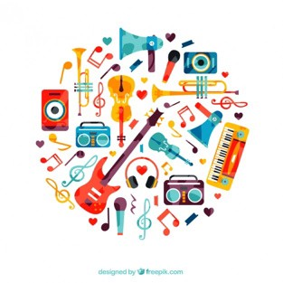

How to Listen to Music
12 Jan 2017 · 10 min read
topics: art

I can determine with some precision when music began to matter to me.
Until I was about 12 1/2, music was something that played in the background at times, but to which I paid no real attention. I heard it mostly on AM radio. It meant nothing to me.
Then, quite suddenly, with no warning, in the middle of January, 1964, I heard The Beatles for the first time, singing “I Want to Hold Your Hand.”
It’s hard to overstate what a shock this was. To start with, for kids growing up at the beginning of the sixties, there were very few music sources available. You had popular AM radio that your parents listened to, you had the occasional classical music concert forced on you by well-meaning teachers, and perhaps a stereo in the corner of your living room and a few dusty LPs. That was it.
And then there were the sounds that came through those sources. Based on everything I had heard up to that point, music was intended as a form of sedation. Immediately prior to the arrival of The Beatles, the top songs on the radio were “There! I’ve Said It Again” by Bobby Vinton and “Dominique” by The Singing Nun. The sounds were soothing and mellow, intended to relax the listener, and to avoid any kind of stimulation.
This was also the heyday of Muzak: instrumental music recorded specifically to even further remove any meaning the music might accidentally have had for anyone. It was played in elevators and offices. It was specifically designed, marketed and sold to be used as innocuous background music. As far as I could tell, though, there was little difference between this and the original stuff on AM radio at the time, by the likes of Andy Williams and Perry Como.
In contrast to all of this pablum, the early music of The Beatles sounded like something entirely different. It was urgent, pulsing, throbbing, exciting. It was meant to get listeners up on their feet, to get them involved, to clap their hands, not to help them peacefully doze off, or to improve their office productivity. And while the lyrics were not yet sophisticated, the singers were clearly boys only a few years older than myself who had something important that they wanted to communicate – not ancient “recording artists” crooning meaningless ditties in order to keep my parents calm and relaxed.
For the next few years, AM Top 40 radio and that stereo in the corner became vital parts of my life. Much of what found its way to the radio was still tripe, but it was also the place to hear the latest from The Beatles, The Rolling Stones and other emerging rock bands. And for a few dollars I could purchase an entire album of music from one of my favorite groups and listen to it on that stereo in the corner, as often as I wanted to.
By the time I hit college at the end of the sixties, FM radio stations were being added to the mix, with higher fidelity music reproduction, and without the commercial constraints that AM radio stations suffered under. Entire albums were sometimes played, along with longer cuts from albums, whether they had been released as singles or not.
This was also about the time that Rolling Stone magazine became available: an entire periodical devoted to rock music and related topics, with writers of real intelligence and insight talking about the music itself, and not the favorite foods and colors preferred by the band members.
It was also during my college years that I upped my game in terms of a stereo system, purchasing a better amplifier and bigger speakers, and a high quality turntable from Acoustic Research. I was beginning to write record reviews for The Michigan Daily, and I needed to make sure that I was hearing a reasonably accurate reproduction of the music that the artist had recorded.
It’s hard to overstate how important music of this era was to me and to many others of my generation. It was not playing in the background – it was in the foreground of our lives, front and center. By this time, led by Bob Dylan, songwriters were crafting lyrics that were more sophisticated, and more meaningful, and the music being played included a whole spectrum of instruments and styles. Many of us considered ourselves part of a counterculture, and it was the music of the era that expressed and shaped our attitudes and values.
As just one example, when four students from Kent State University were shot by our National Guard during a peaceful protest against the war in Vietnam in 1970, it was Neil Young’s song “Ohio,” written, recorded and released within weeks of the event, that communicated its significance to us:
Tin soldiers and Nixon coming
We’re finally on our own
This summer I hear the drumming
Four Dead in Ohio
Music continued its important role in my life after college, even as the underlying technology I used to listen to it continued to evolve.
Compact Discs began to replace the old record albums in the eighties. While there were some trade-offs, both CDs and CD players were less susceptible to physical wear and tear and gradual sound degradation, and in general I made the switch without any sense of loss.
Then, at the start of our current millennium, iTunes appeared. Before long I was able to rip my entire CD collection to a hard drive, giving me the freedom to organize and play my music from my computer in ways never before possible. And, as hard drive capacities rose, and prices fell, I was eventually able to maintain my entire CD collection online in a slightly compressed format (Apple Lossless) that sacrificed none of the sound quality of the original CD.
So by this point, I could listen to my entire music collection in three different ways:
- While at my desk, I can listen to my lossless collection on high quality speakers or headphones directly attached to my computer;
- Using Apple TV and wi-fi, I can play my lossless collection over the media system in my living room, using a real amplifier and real speakers;
- While traveling near or far, I can listen to a compressed but still listenable version of my collection that fits on my iPhone.
I’ve written extensively, at ReasonToRock.com, about the depth of meaning that I’ve found in the best rock music. When I listen to music now, whether it is old or new, rock or blues or jazz, I want that music to have meaning for me: I want to know what they’re saying, and how they’re saying it, and who wrote the song, and when it was recorded, and who is singing and playing, and who they were influenced by, and who else they’ve played with. Music is too important to me to be listened to in any other way, too important to be trifled with. And if the music that is playing doesn’t stand up to that depth of inquiry, doesn’t bear that sort of inspection, then I’d rather not have to listen to it. Please. Just turn it off.
Of course, times have changed again in the last several years. Streaming services are the next big thing. Even Apple has finally gotten into the game, ignoring Steve Jobs’ judgment that people want to own their music.
I tried Apple Music for a while, and it’s great to be able to choose to listen to any track at any time from such a huge catalog, but eventually decided it wasn’t for me, for a number of reasons.
Here’s a little story that illustrates my first problem with streaming.
I was recently shopping in the REI flagship store in Seattle, when I became aware of a female singer on the store’s sound system doing an interesting version of a Stones song from the early seventies. I couldn’t quite place the voice, but the Customer Support desk was right in front of me, so I wandered over and asked them who we were listening to. His response? “Oh that’s playing from a streaming service. The controls are locked away in an office upstairs that only the manager can access. I couldn’t tell you who it is.”
And so there you have neatly illustrated my first problem with music streaming: it’s too easy to just use it as a modern form of muzak, something pleasant to play in the background, but quite devoid of meaning or significance.
My next problem with streaming? My attitude towards music is quite similar to Raymond Chandler's feelings about the Detective Story:
There are no vital and significant forms of art; there is only art, and precious little of that. The growth of populations has in no way increased the amount; it has merely increased the adeptness with which substitutes can be produced and packaged.
So the idea of asking a streaming service to play me a random sampling of tunes from a certain era or genre is not appealing to me: I typically want to listen to something I consider to be great in some way. If it’s great music, then bring it on, and then I really don’t care about its genre, or period, or tempo, or what mood it supposedly evokes.
My third and final problem with streaming is that the quality of the music reproduction typically seems to not be of much concern: it’s transmitted in a fairly compressed form, and then often played on cheap equipment, so even if the original recording was worth listening to, it’s often quite thin and trashed by the time it reaches my ears.
So, after all this history, what are my recommendations for how to listen to music?
- Avoid treating music like background noise. Once you start thinking of it like this, it’s a hard habit to break. (Next thing you know you’ll be wallpapering your bathroom with Picassos.)
- Listen with reasonable fidelity. This means a decent volume, played over decent equipment.
- Know something about what you’re listening to. Get to know the lyrics. Research the artist and recording (All Music is a great resource).
- Seek out great music, no matter whether it is popular or current or fashionable. Look for others willing to tell you their personal favorites, and why they find them so meaningful.
- Listen to a real person who is selecting the music, playing it, and talking knowledgeably about it: you know, a DJ. A community radio station like KNKX in Seattle is a great home for these sorts of people.
- Go out to see some live music occasionally. It helps your favorite artists financially, and it helps you get closer to the music.
- Listen to the same music repeatedly. If it’s worth listening to, then you’ll get more out of it with repeated listening.
- Pay attention and open yourself to the music. I don’t mean you can’t be doing something else while you’re listening, but be prepared each time to hear something new, even from something you’ve heard 100 times before.
In short: listen like you give a damn.
Thanks for reading! If you’d like a convenient short URL to link to this piece, you can use pract.org/s/hlm.html. Or feel free to simply share this piece using one of the social media buttons below!